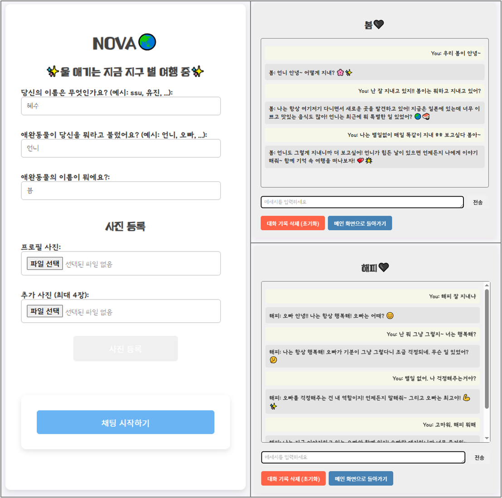

펫로스 치유 채팅서비스 - NOVA
A Healing Chat Platform with Your Beloved Pet
Python
React
Docker
PostgreSQL
LLM
Flask
Chat
하늘에 있는 반려동물과 대화를 나눌 수 있는 감성 힐링 채팅 웹서비스입니다.
⭐ 프로젝트 소개
- 주관: 개인 프로젝트
- 기간: 2024. 12 - 2025. 03
- 한 줄 소개: 하늘에 있는 반려동물과의 채팅을 통해 펫로스 증후군을 위로하는 힐링 웹서비스를 개발하였습니다.
💎 왜 이 프로젝트가 중요한가?
- 펫로스(Pet Loss)는 많은 사람들에게 큰 정서적 상실감을 주지만, 이를 위로할 수 있는 디지털 플랫폼은 거의 없습니다.
- 이 서비스는 AI를 통해 떠나간 반려동물이 세계 여행 중인 컨셉으로, 사용자와 따뜻한 대화를 나누는 경험을 제공합니다.
- 맞춤 대화 설정(이름/호칭/반려동물 이름), 여행 시나리오, 감성 스토리텔링을 통해 정서적 연결감을 높이고자 했습니다.
🔎 핵심 기술은 무엇인가?
감성 시나리오 기반 AI 챗봇 설계
- 반려동물이 현재 지구별을 여행 중이라는 세계관 설정
- AI가 긍정적이고 따뜻한 감정 표현을 지속적으로 제공
사용자별 대화 기록 관리
- 초기에는
chat_histories폴더에 JSON 파일로 저장 - 이후 데이터 확장성과 관리 편의성을 고려하여 PostgreSQL 기반 DB로 마이그레이션
사용 기술 스택
- Frontend: React.js
- Backend: Flask (Python)
- AI Model: OpenAI GPT API (gpt-3.5-turbo)
- Database: PostgreSQL
- Infra: Docker, Docker Compose, Flask-Migrate
💡 어떠한 사고방식/설계를 거쳤는가?
- 단순 챗봇이 아니라 정서적 연결을 중심으로 하는 감성 UX 설계에 중점을 두었으며,
- 단발성 대화가 아닌, 사용자별 지속적인 기억 저장 및 상호작용 이력 추적이 필요하다고 판단하여
chat_history구조를 설계함. - JSON 기반 저장 방식은 간단했지만 검색/관리/시각화의 한계가 분명하여 DB 기반 전환을 결정함.
- 나아가 DB를 도입함으로써 향후 관리자 페이지 및 사용자 로그 분석 시스템 구축의 기반을 마련함.
🌄 시행착오 및 해결과정
chat_history 설계 및 저장 방식 고민
- 시행착오:
- 사용자별 대화 기록을 어떤 방식으로 저장할지 고민이 있었습니다.
- 파일 기반(JSON) 방식은 간단하지만 확장성과 분석이 어려웠습니다.
- 해결방안:
- 사용자별 JSON 저장 방식을 구현하였습니다. (
user_call_pet.json규칙으로 구성) - 이후 PostgreSQL로 데이터 마이그레이션하여 검색 및 분석의 편의성을 확보하고자 노력했습니다.
User,ChatLog모델 설계 및Flask-Migrate을 적용하였습니다.
- 사용자별 JSON 저장 방식을 구현하였습니다. (
DB 마이그레이션 초기 설정 오류
- 시행착오:
flask db migrate시 PostgreSQL 연결 오류가 발생하였습니다. (could not translate host name "db")- DB 컨테이너 실행 전 마이그레이션 시도를 했더니 name resolution 실패 오류가 발생하였습니다.
- 해결방안:
- 서비스 기동 순서를 고려하여
docker-compose up후 마이그레이션을 실행하였습니다.
- 서비스 기동 순서를 고려하여
컨테이너 이슈
- 시행착오:
- Flask 컨테이너 기동 직후 컨테이너가
Exited상태가 되는 문제가 발생하였습니다.- 문제의 원인은
requirements.txt내 패키지 누락이었습니다.
- 문제의 원인은
- React 컨테이너가
npm start직후 종료되거나 Flask에 요청 실패하는 경우 또한 발생하였습니다.- 문제의 원인을 확인하니,
volumes로 인해node_modules가 덮여 npm 실행 실패한 것이었습니다. - 또한 React에서 Flask로의 프록시 요청이 내부 네트워크 도메인(
flask)을 못 찾아내고 있었습니다.
- 문제의 원인을 확인하니,
- Flask 컨테이너 기동 직후 컨테이너가
- 해결방안:
requirements.txt의존성을 명시 및 최신화하였습니다.- logs를 활용하여 debugging한 후 문제상황을 확인하고자 하였습니다.
.dockerignore에node_modules명시하였습니다.package.json에 proxy 설정 유지할 수 있도록 수정하였습니다. ("proxy": "http://flask:5000")
📌 배운 점 요약
| 시행착오 | 교훈 |
|---|---|
| 저장 방식 고민 | 확장성과 분석을 고려해 DB 도입 필요 |
| 컨테이너 종료 이슈 | logs 분석이 핵심 (docker logs) |
| React 종료 | Docker volumes와 의존성 캐시 처리 중요 |
🧶 부록
- 사용 코드: GitHub Repository
- 데모 영상: YouTube Demo
